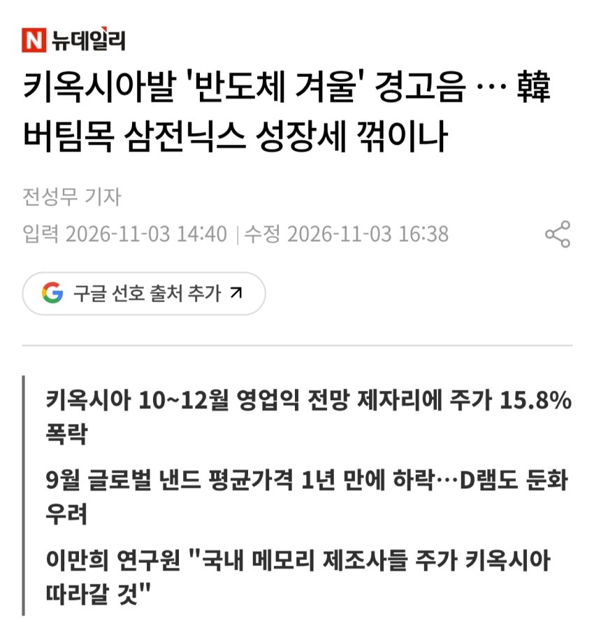
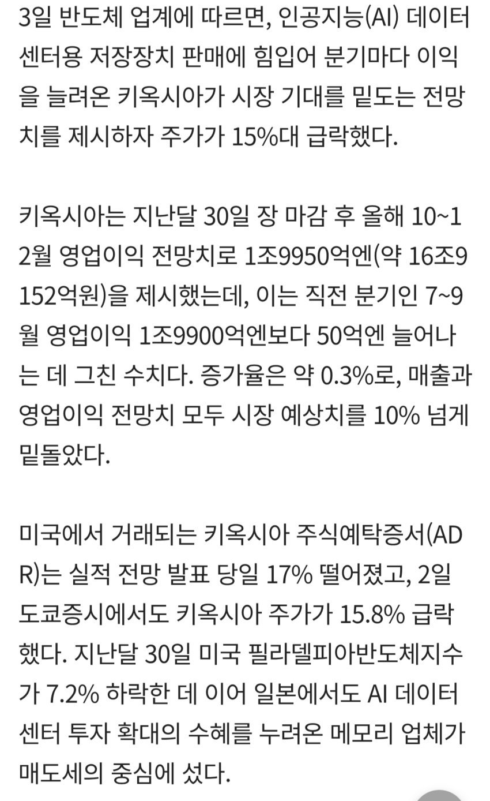
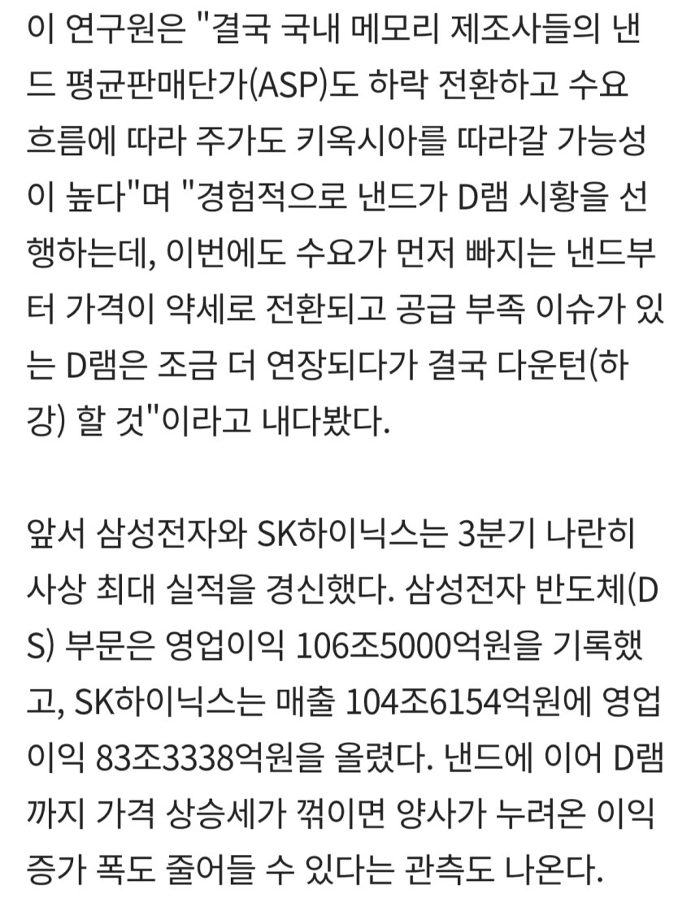
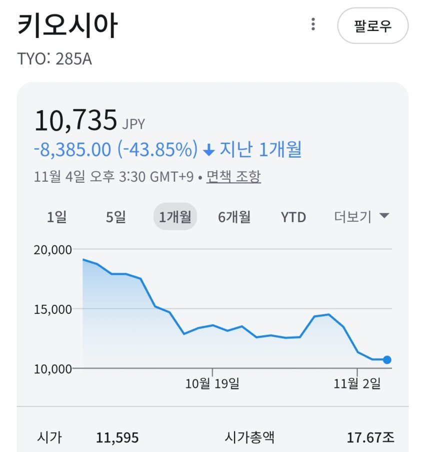
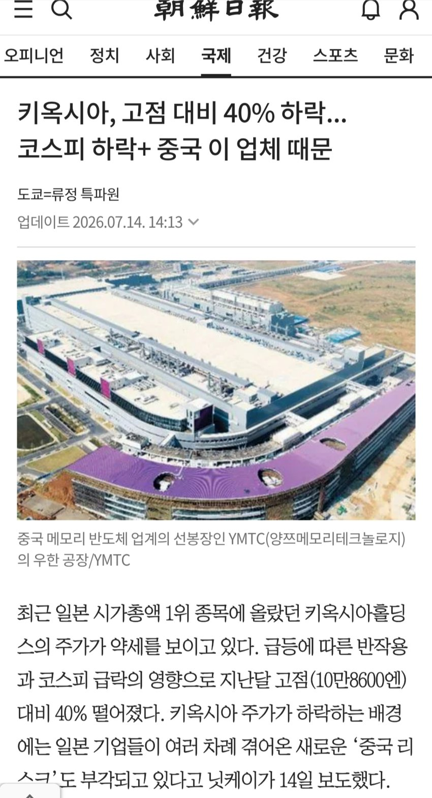
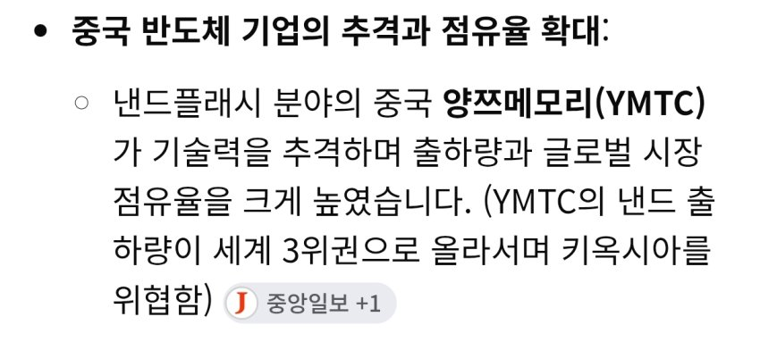
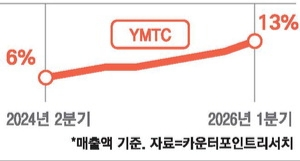
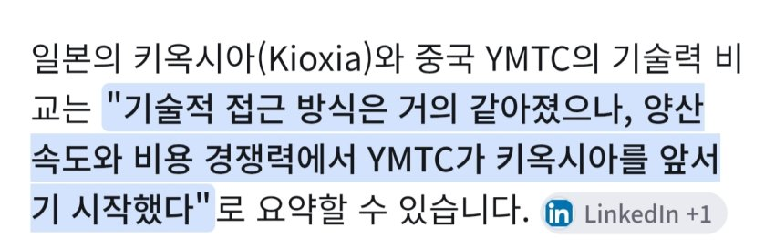
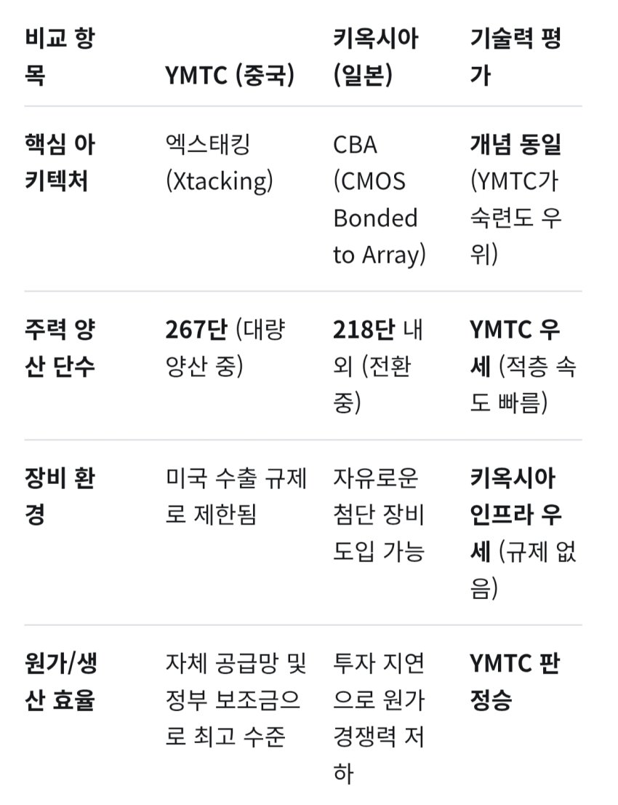

키옥시아발 '반도체 겨울' 경고음 … 韓 버팀목 삼전닉스 성장세 꺾이나 | 뉴데일리

최근 실적발표했는데, 전 분기와 영업이익이 같아서 폭락해버림
주가도 한달사이 반토막..

ㅎㄷㄷ..
키옥시아는 몇개월 전에도 폭락한적이 있는데,

짱깨 낸드플래시회사 YMTC한테 점유율 따잇당한 일이 있었음


YMTC점유율은 2분기는 출하량 기준 16.5퍼, 매출기준 14퍼..

진짜 문제는 ㅈ문가들마저 문제는 기술력, 생산성, 가격경쟁력 모두 키옥시아를 넘어섰다는 평가..


더군다나 YMTC 제3공장이 올해 겨울부터 가동되고, 제4 제5 공장도 짓는다고 발표함 ㄷㄷ..
국제반도체업계에서는 2028년에 점유율 20퍼를 돌파할 것으로 추정한다함
야메로.. 이런 싸움은 모 야메룽다 ㅡㅠ